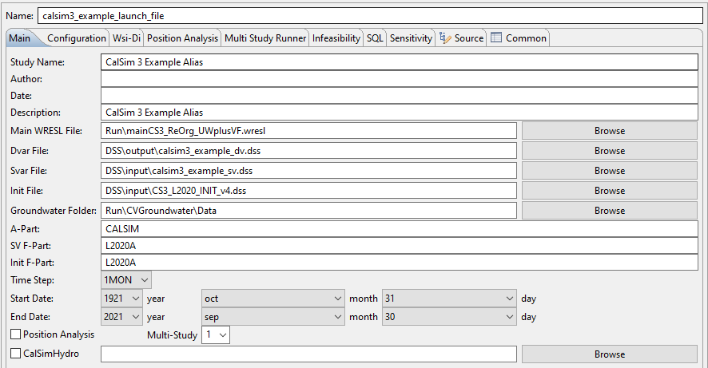

Model Setup
WRIMS
WRIMS is a generalized water resources modeling system for evaluating operational alternatives of large, complex river basins. WRIMS integrates a simulation language for flexible operational criteria specification, a linear programming solver for efficient water allocation decisions, and graphics capabilities for ease of use. These combined capabilities provide a comprehensive and powerful modeling tool for water resource systems simulation. The WRIMS GUI/IDE is the entry point for modifying, running and debugging CalSim 3 models.
Launch File
The .launch file is the main configuration file for launching a CalSim 3 run. It designates the location of the main file, the input (SV) .dss file and location to store the output (DV) files. It should be located in the top-level directory of the CalSim 3 model package.
To edit the .launch file Right-Click on the .launch file → Run As → Run Configurations 
| Field | Description |
|---|---|
| Main WRESL File | The top-level file within the CalSim 3 logic hierarchy. |
| Dvar File | The CalSim 3 "Decision Variable" output file location. This file is conventionally placed in .../dss/output. |
| Svar File | The CalSim 3 "State Variable" input file location. This file will typically be located in .../dss/input. |
| Init File | the CalSim 3 initial file location. This file will typically be located in .../dss/input. |
Note
If a launch file does not already exist, then you will need to create one. Click here for instructions
{kind=link}